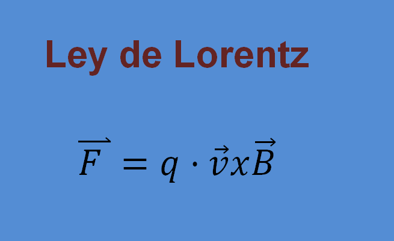
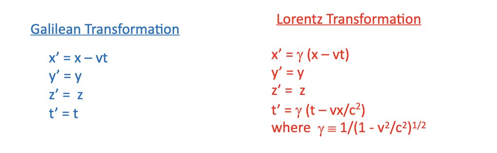

La Fuerza de Lorentz describe la fuerza que un campo electromagnético ejerce sobre una partícula cargada. Es una de las leyes fundamentales del electromagnetismo.
La fuerza de Lorentz se expresa como la suma de la fuerza eléctrica y la fuerza magnética:
F= q( E + v × B )
F: es la fuerza de Lorentz (vector).
q: es la carga eléctrica de la partícula (escalar).
E: es el campo eléctrico (vector).
B: es el campo magnético (vector).
×: denota el producto vectorial.
Si solo consideramos la parte magnética de la fuerza (cuando E =0), su magnitud se puede expresar como:
Fm=qv B sin(θ)
Donde θ es el ángulo entre el vector velocidad v y el vector campo magnético B
Aunque la fórmula principal no usa exponentes en el sentido de potencias, en un sistema de coordenadas cartesianas, los componentes de la fuerza de Lorentz pueden escribirse así (esto no es "notación exponencial" en el sentido matemático común, sino una descomposición en componentes):
Fx = q(Ex + vyBz − vzBy)
Fy = q(Ey + vzBx − vxBz)
Fz = q(Ez + vxBy − vyBx)
Las Transformaciones de Lorentz son un conjunto de ecuaciones que describen cómo se relacionan las coordenadas de espacio y tiempo de un evento entre dos sistemas de referencia inerciales que se mueven con velocidad relativa constante. Son fundamentales en la teoría de la relatividad especial.
x ′=γ(x − vt)
y ′=y
z ′=z
